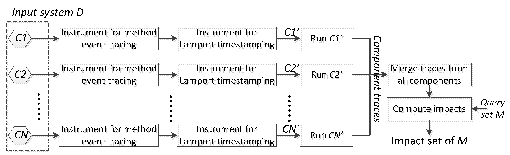

- Note:
- Components of the system are distinguished in the way that each is supposed to run in a separate process. The diagram shows that DistEA instruments each component independently and, after static analysis, the instrumented version of each component will execute concurrently in multiple processes.
DistEA works in the folling three main phases:
- 1. static-analysis phase -- instrument the system under analysis for monitoring method-execution events and timestamping them with respect to the partial ordering of method events in all concurrent processes of the system execution
- 2. runtime phase -- run instrumented version of the system just as running it normally
- 3. querying phase -- collect traces from all processes and merge them; then compute impact set for the given query from the merged trace